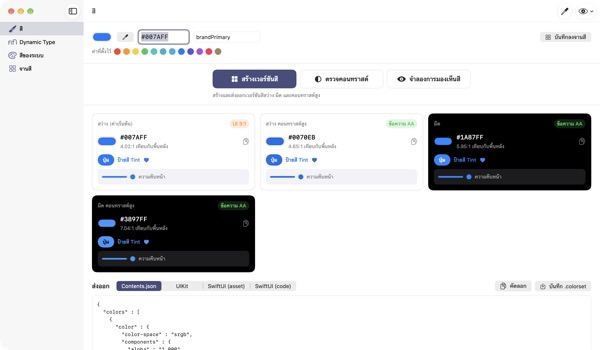
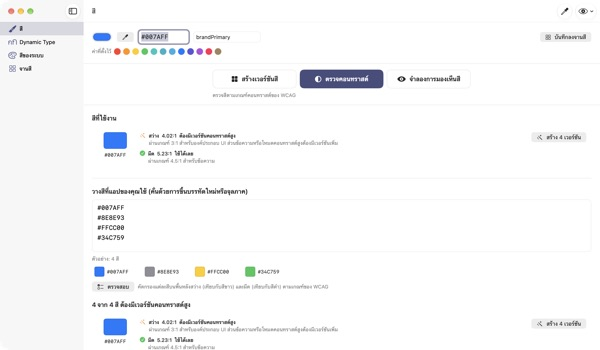
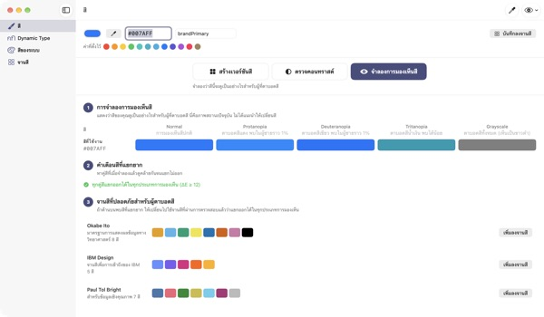
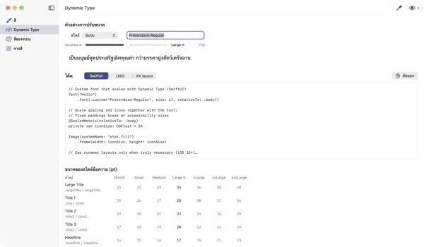

ใส่สีเดียว
ได้ครบทั้งสี่โหมด
สีของระบบปรับตามโหมดมืดและการเพิ่มคอนทราสต์ได้เอง แต่สีแบรนด์ของคุณไม่ได้ TetraTint ใช้สีเดียวจากโหมดสว่าง สร้างเวอร์ชันสว่าง สว่างคอนทราสต์สูง มืด และมืดคอนทราสต์สูง แล้วส่งออกไป Xcode ได้ทันที
ทุกฟีเจอร์ใช้ได้ฟรี รองรับ macOS 14 ขึ้นไป

ลองใส่สีแบรนด์ของคุณ
วางค่า hex หรือแตะค่าที่ตั้งไว้ แล้วจะเห็นทั้งสี่เวอร์ชันพร้อมคอนทราสต์ทันที ด้วยการคำนวณแบบเดียวกับในแอป
สีแบรนด์เคยจมหายในโหมดมืดไหม
สีน้ำเงินที่เลือกไว้ในโหมดสว่าง พอวางบนพื้นดำกลับดูหม่น และคนที่เปิดการเพิ่มคอนทราสต์ก็อ่านตัวอักษรแทบไม่ออก การหาสีให้ทุกโหมดและวัดคอนทราสต์ทีละค่าด้วยมือกินเวลาไปครึ่งวัน TetraTint สร้างแต่ละเวอร์ชันตามแบบที่สีของระบบเปลี่ยนไปในแต่ละโหมด และบอกทันทีว่าแต่ละสีผ่านเกณฑ์หรือไม่
ตรวจทุกสีที่ใช้อยู่ได้ในครั้งเดียว
วางรายการ hex ทั้งหมดในแอปของคุณ แล้วแต่ละสีจะถูกจัดว่าใช้ได้เลย ต้องมีเวอร์ชันคอนทราสต์สูง หรือใช้เพื่อการตกแต่งเท่านั้น
สีที่มีปัญหากดครั้งเดียวก็กลายเป็นสี่เวอร์ชันที่บันทึกลงจานสี ใช้เตรียมป้ายการช่วยการเข้าถึงเรื่องคอนทราสต์ที่เพียงพอบน App Store ได้ด้วย

มองผ่านสายตาของคนที่มองเห็นสีต่างไป
จำลองจานสีในแบบตาบอดสีแดง ตาบอดสีเขียว ตาบอดสีน้ำเงิน และขาวดำ พร้อมเตือนคู่สีที่แยกกันยาก
โหลดจานสีที่ปลอดภัยสำหรับคนตาบอดสีอย่าง Okabe–Ito, IBM และ Paul Tol ได้ในคลิกเดียว หรือกดปุ่มรูปตามุมขวาบนเพื่อดูทั้งแอปในแบบนั้น

ฟอนต์ที่กำหนดเองก็ปรับตามขนาดตัวอักษรได้
ดูตาราง 11 รูปแบบข้อความใน 7 ระดับขนาด แล้วเลื่อนแถบเพื่อดูขนาดจริง
ใส่ชื่อ PostScript ของฟอนต์ แล้วรับโค้ด UIKit, SwiftUI และ @ScaledMetric พร้อมโค้ดที่เปลี่ยนเลย์เอาต์เมื่อตัวอักษรใหญ่

เริ่มได้ใน 3 ขั้นตอน
- 1
ใส่สีหลัก
วาง hex ใช้หลอดดูดสีจากที่ใดก็ได้บนหน้าจอ หรือเลือกค่าที่ตั้งไว้
- 2
ตรวจสี่เวอร์ชัน
ดูป้ายคอนทราสต์ แล้วปรับเวอร์ชันที่ไม่เข้ากับแบรนด์ด้วยตัวเลือกสี
- 3
ส่งออกไป Xcode
คัดลอกหรือบันทึกเป็น Contents.json, .colorset หรือโค้ด UIKit และ SwiftUI
วิธีสร้างแต่ละเวอร์ชันและความหมายของป้าย
- สว่าง (ค่าเริ่มต้น)
- สีตามที่คุณใส่
- สว่าง คอนทราสต์สูง
- เพิ่มความสดเล็กน้อย แล้วทำให้เข้มจนได้ 4.5:1 บนพื้นขาว
- มืด
- สว่างขึ้นและสดขึ้นเล็กน้อย (ความสว่าง +5 ความสด +3)
- มืด คอนทราสต์สูง
- ทำให้สว่างจนได้ 7:1 บนพื้นดำ
- ข้อความ AA
- คอนทราสต์กับพื้นหลังตั้งแต่ 4.5:1 ใช้กับเนื้อหาได้
- UI 3:1
- ตั้งแต่ 3:1 ใช้กับปุ่มและไอคอนได้ แต่ไม่พอสำหรับตัวอักษร
- ต่ำ
- ต่ำกว่า 3:1 ไม่ควรใช้กับตัวอักษร ไอคอน หรือการบอกสถานะ
- ส่งออก
- Contents.json · .colorset · UIKit · SwiftUI หรือทั้งจานสีเป็น .xcassets ไฟล์เดียว
ค่าอ้างอิงของสีระบบมาจาก Human Interface Guidelines ของ Apple และอาจเปลี่ยนเมื่ออัปเดตระบบ ในแอปที่เผยแพร่จริง ให้ใช้ API สีของระบบ
ทุกฟีเจอร์ใช้ได้ฟรี
TetraTint
- สร้างและส่งออกสี่เวอร์ชัน
- ตรวจคอนทราสต์จากรายการ hex
- จำลองการมองเห็นสีและจานสีที่ปลอดภัยสำหรับคนตาบอดสี
- ตาราง Dynamic Type และสร้างโค้ด
- ค่าอ้างอิงสีระบบ ส่งออกจานสีเป็น .xcassets
สนับสนุนผู้พัฒนา (ไม่บังคับ)
- ไม่มีฟีเจอร์ที่ถูกล็อก
- ถ้าแอปช่วยคุณได้ ให้ทิปได้ในการตั้งค่า
การให้ทิปไม่ได้เปลี่ยนฟีเจอร์ใดๆ
ไม่มีบัญชี ไม่มีโฆษณา จานสีเก็บไว้ใน Mac เครื่องนี้เท่านั้น
คำถามที่พบบ่อย
เวอร์ชันที่สร้างอัตโนมัติไม่เข้ากับแบรนด์
ปรับแต่ละเวอร์ชันได้ด้วยตัวเลือกสีบนการ์ด ปุ่ม สร้างใหม่ทั้งหมด จะทิ้งการแก้ไขเองและสร้างทุกอย่างใหม่จากสีหลัก
แต่ละเวอร์ชันคำนวณอย่างไร
อิงตามการเปลี่ยนจริงของสีระบบ Apple ในแต่ละโหมด คือในโหมดมืดสว่างและสดขึ้นเล็กน้อย สว่างคอนทราสต์สูงได้อย่างน้อย 4.5:1 บนพื้นขาว และมืดคอนทราสต์สูงได้อย่างน้อย 7:1 บนพื้นดำ
คำเตือนในการจำลองการมองเห็นสีหมายถึงอะไร
หมายความว่าในการจำลองนั้น ความต่างของสองสี (ΔE) ต่ำกว่า 12 จนแยกกันยาก อย่าใช้สีอย่างเดียวบอกสถานะ ให้เพิ่มไอคอน ลวดลาย หรือข้อความ หรือเปลี่ยนไปใช้จานสีที่ปลอดภัย
จะทำให้ฟอนต์ที่กำหนดเองรองรับ Dynamic Type ได้อย่างไร
ในหน้า Dynamic Type ใส่ชื่อ PostScript ของฟอนต์แล้วเลือกรูปแบบ จะได้โค้ด UIKit, SwiftUI และ @ScaledMetric ในขนาดสำหรับการช่วยการเข้าถึง Body จะใหญ่กว่าค่าเริ่มต้นเกินสามเท่า จึงควรเลี่ยงความสูงคงที่และ lineLimit(1)
สีที่ส่งออกดูต่างจากสีระบบในแอป
ค่าอ้างอิงมาจากเอกสาร Human Interface Guidelines และอาจเปลี่ยนไปในแต่ละรุ่นของระบบ สำหรับสีระบบให้ใช้ API ของ UIColor หรือ Color เสมอ
จานสีที่บันทึกไว้เก็บที่ไหน
เก็บใน Mac ของคุณเท่านั้น ไม่ซิงค์ขึ้นคลาวด์และไม่ส่งไปที่ใด ดูรายละเอียดได้ในนโยบายความเป็นส่วนตัว
สีที่ดูดด้วยหลอดดูดสีถูกบันทึกไว้ไหม
ไม่ แอปอ่านเฉพาะค่าสีตรงจุดที่เลือกแล้วใช้เป็นสีที่กำลังทำงาน ไม่บันทึกหรือส่งภาพหน้าจอ
ใช้กับ Mac รุ่นไหนได้
macOS 14 (Sonoma) ขึ้นไป ตอนส่งออก คุณเลือกตำแหน่งบันทึกไฟล์เอง
แจ้งปัญหา เสนอฟีเจอร์ หรือสอบถาม ส่งอีเมลมาที่ leeo@kakao.com ปกติจะตอบกลับภายใน 2–3 วัน